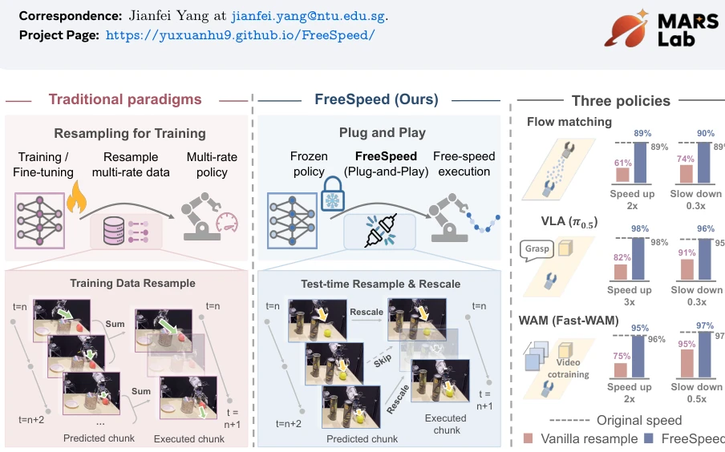
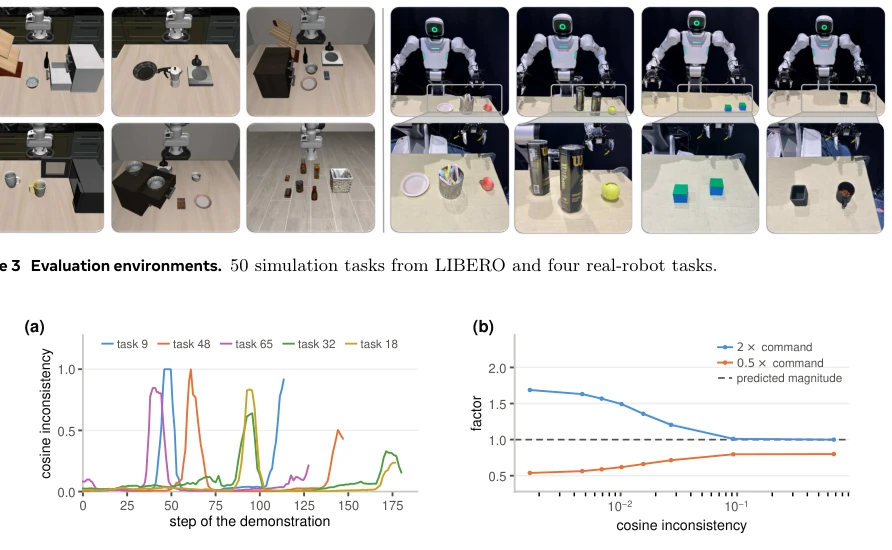
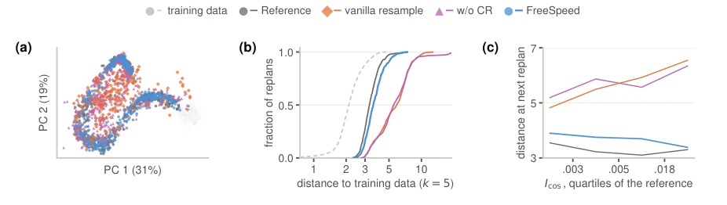
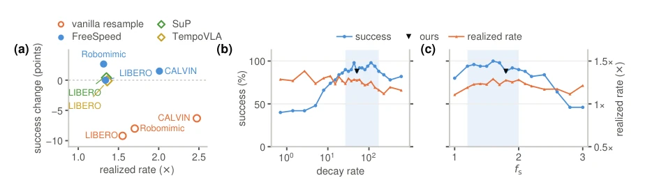

在真实场景中，机器人需要动态调整速度：时间紧时加速，人机交互或精细操作时减速。然而，现有的模仿学习策略（Imitation Learning）通常隐式继承了演示数据的速度，缺乏显式的速度控制接口。虽然已有工作如 TempoVLA (Jing et al., 2026) 和 SpeedTuning (Yuan et al., 2025) 实现了速度控制，但它们大多依赖针对特定任务的数据增强、重时间（retiming）演示数据或额外的强化学习微调，泛化能力受限，难以直接迁移到未见过的场景。更简单粗暴的测试时重采样（Vanilla Resampling）方法，虽然无需训练，但会改变动作步长，导致观测分布发生偏移（Out-of-Distribution, OOD），特别是在抓取、放置等关键阶段，极易引发任务失败。因此，亟需一种无需训练、模型无关且能自适应关键阶段的在线速度控制方法。
—

Figure 1 FreeSpeed modulates the execution speed of a frozen policy. (a) Methods based on demonstration retiming resample demonstrations and train or fine-tune the policy, while FreeSpeed resamples and rescales predicted action chunks at test time. (b) Success rates of FreeSpeed and vanilla resampling on three policies under speedup and slowdown commands.
Figure 2 FreeSpeed at one replan. The frozen policy predicts an action chunk. Its translation increments provide a cosine inconsistency score, and the rate command determines temporal resampling. Together, the score and command determine the factor used to rescale the resampled translation and rotation increments.

Figure 4 The signal and the response. (a) Cosine inconsistency along human demonstrations of five LIBERO-90 tasks, with peaks during grasping and placement. (b) The mapping from cosine inconsistency to the rescaling factor under the 2× and 0.5× commands.
Figure 3 Evaluation environments. 50 simulation tasks from LIBERO and four real-robot tasks.

Figure 6 Observation distribution shift under the 2× command. FreeSpeed remains close to the 1× reference in (a) and (b), while the baselines show larger deviations from the training data, particularly after executing chunks with high cosine inconsistency in (c).

Figure 7 Comparison with published methods and sensitivity to the two constants. (a) Success change against realized rate. (b, c) The decay rate λ and the factor fs swept in turn.